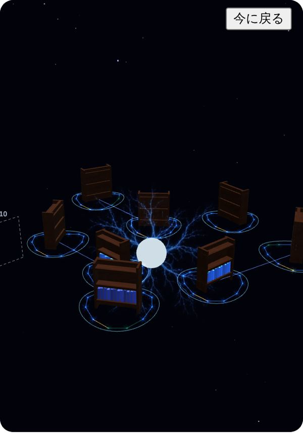
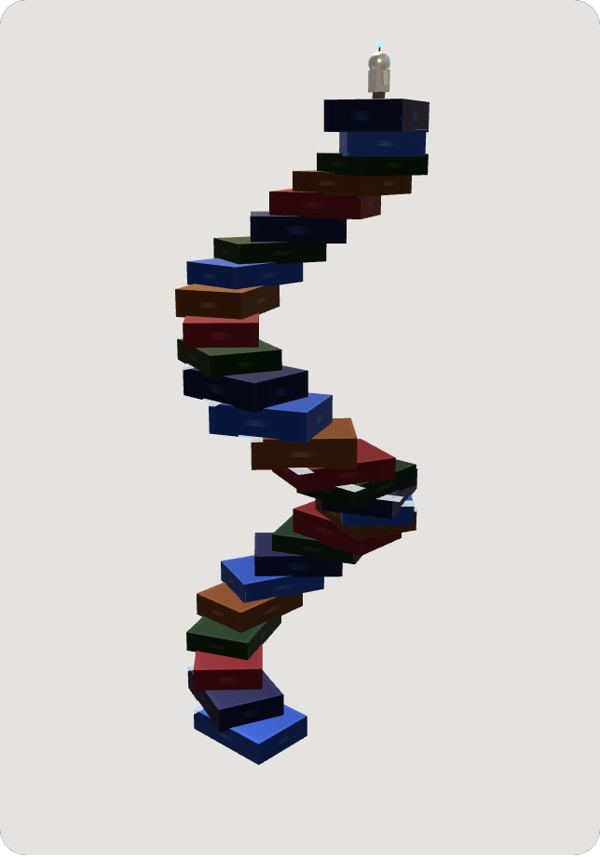
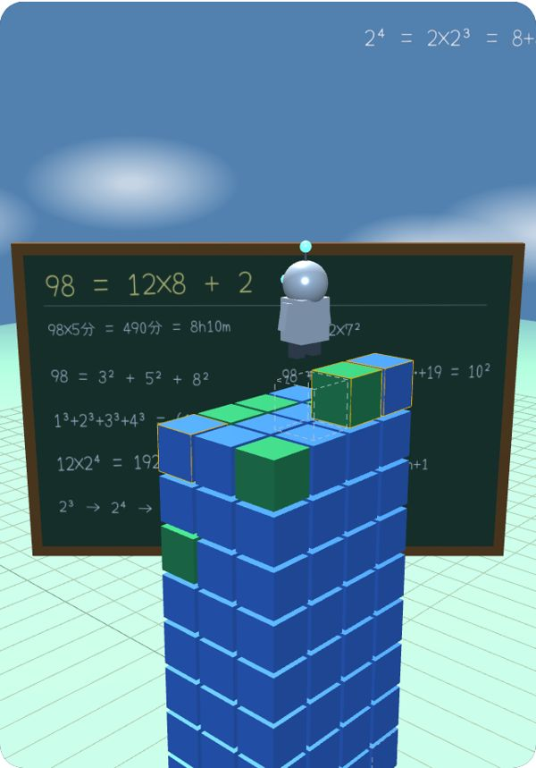
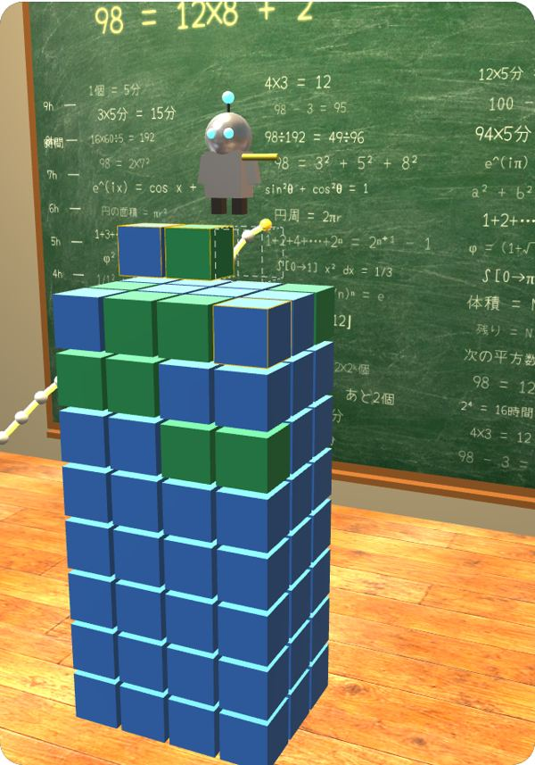
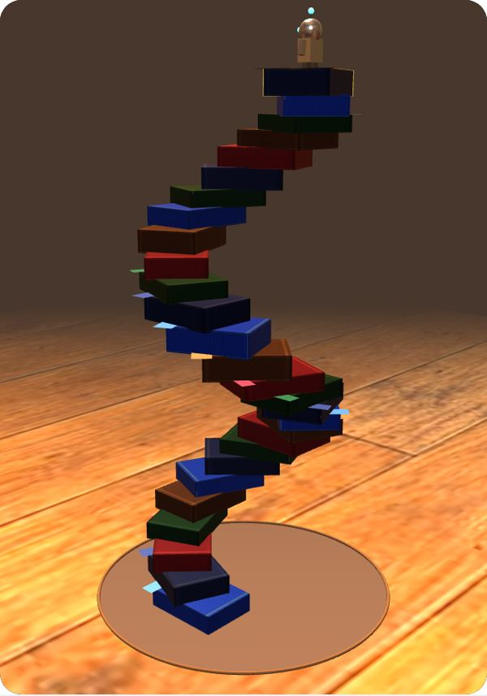
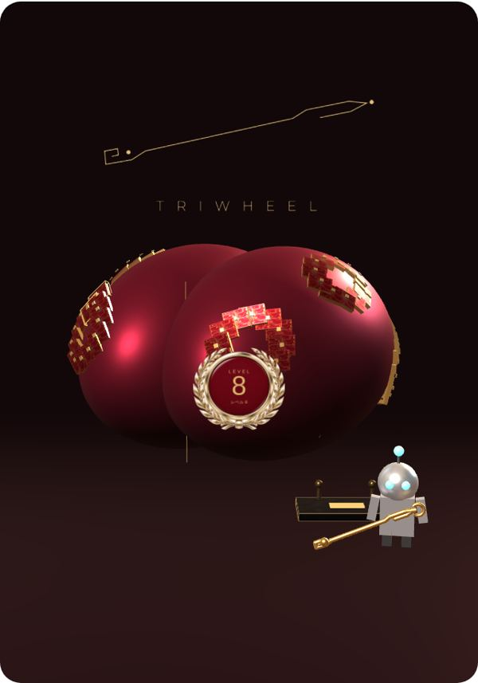
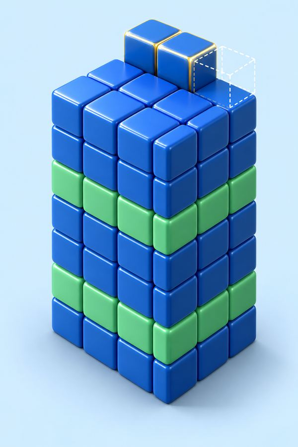

10月28日の版20です。
外に出さない紙です。
次の1歩
CEO が、
論文を5分だけ読む。
ピンの丸を押すと、
その箱が上に留まる。
ピンで留めた箱

※ シナプスとは、
脳の中のつながりの事です。
※ 脳の話は、
たとえの絵です。

※ 右上の脳は、
たとえの絵です。




※ 脳の絵は、
たとえの絵です。
ブロックを押すと、
その日の記録が出ます。
CEO が指でずらすと、
まわりを回ります。
0個から始めます。
押した分はスマホに残ります。

塔が育つと、
この様に見えます。
※ 絵は、
GPT の絵の道具で作りました。
98 = 2 × 7²
塔は、ブロック1個を、
体積1と数えます。
※ Δ（デルタ）とは、
増えた分の事です。
休んでも、
合計は減りません。
青が論文、赤紫が算数、
朱色がMMA、緑が瞑想です。
済み
81 = 9²
次・あと2個
100 = 10²
その次
121 = 11²
節目の間は19・21・23と、
2ずつ広がります。
1階できるごとにも、
小さく祝います。
2日以上休んだ後は、
塔の上にこの札が出ます。
責める言葉は、
出しません。
1つ目は、
＋1個だけの札です。
5分だけなら、
始めるのが軽くなります。
2つ目は、
上から落ちて積む動きです。
やった直後に、
ごほうびが来ます。
3つ目は、
次まであと何個です。
塔は、近い的だけを、
大きく見せます。
4つ目は、
休んだ後のおかえりです。
塔は、休みを責めずに、
戻った事をほめます。
5つ目は、
押すとその日の記録です。
ふだんの塔は、
字を出しません。
3人とも、
この5つで一致しました。
予定の点線は外します。
点線は、
残った宿題に見えるためです。
次の空きの点線は、
1つだけ残します。
数学は、
割り算の式と平方数です。
体積も、
合計の数で見せます。
素因数は、
押した時だけ出します。
続いた日が0に戻ると、
やる気が落ちます。
この紙は、
合計と今月の日を出します。
5分に足りない分は、
次へ持ち越します。
書き忘れた日も、
後から足せる様にします。
1日30分なら、
1年で約180階です。
上の階だけ大きく、
下はまとめて見せます。
効いたかは、
2週間で確かめます。
見る数は、
始められた日の数です。
ソル6.1 20回、
アストラ1回、
ルナ21回（コード）と、
GPT の絵38枚です。
この仕事で呼んだ数。
人と物と動物を、
良い方へ運ぶ車です。
三輪車は倒れません。